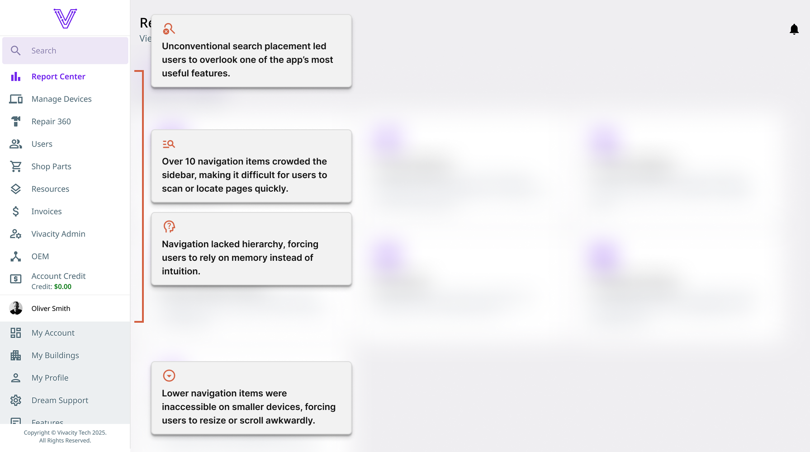
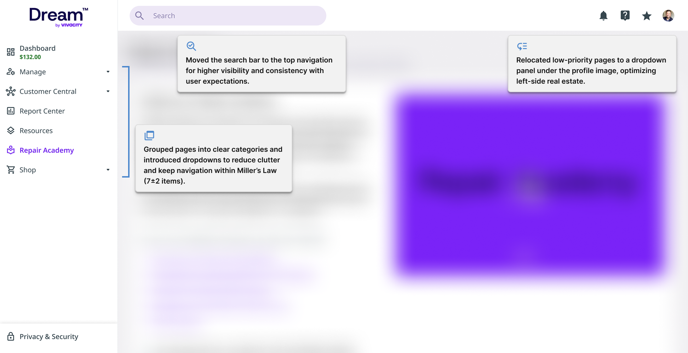

Navigation Redesign
As Dream™ grew, its left-hand navigation became increasingly cluttered, holding over ten pages and forcing users to scroll to access even the most common features. The placement of key elements, like the search bar buried at the top of the sidebar, made them easy to overlook, while the top-right area of the interface remained mostly unused. This layout not only slowed users down but made the experience especially frustrating for new users unfamiliar with the app’s structure.
To solve these issues, I led a navigation redesign that reorganized content into clear, logical groups and redistributed elements across the interface to maximize space and usability. By introducing dropdowns, relocating the search bar, and adding a secondary navigation to the top-right, the layout became cleaner and more intuitive. The result is a navigation system that feels familiar, reduces cognitive load, and helps users find what they need faster, without disrupting their existing workflows.
Context & Problem
Dream™ Asset Management is a SaaS platform used by K–12 schools to manage devices, repairs, and much more. The main navigation relied heavily on a left sidebar that held more than ten pages—sometimes even more depending on user permissions. While each item included an icon for recognition, the structure felt crowded and unorganized. The search bar was tucked into the top of the sidebar, where users rarely noticed it, and on laptop-sized screens, the accordion for lesser-used pages like My Account or Features was often cut off. This was a significant issue given that many of Dream™'s school-based users would access the system on Chromebooks.
For school staff, IT managers, and repair techs, this layout made it difficult to find what they needed quickly. Even experienced users may have found themselves scrolling or guessing where pages might be located, which slowed their workflow and leads to frustration, especially on smaller devices.
Goals
The main goal was to create a more intuitive, organized navigation system that reflected how users think about their tasks. My objectives were to:
- Reduce clutter by grouping pages logically.
- Use underutilized screen space to minimize scrolling.
- Improve discoverability by placing key items in familiar, expected locations.
Essentially, I wanted users to know where to go without thinking twice. For example, “Users” would naturally live under Manage, and personal profile settings would appear in the top-right corner where most users expect them.
I shared these ideas with the development team, but time constraints prevented the ideas from being progressed further. However, when the CEO later requested a navigation cleanup, it became the perfect opportunity to put these ideas into action and align both usability and leadership goals.
Design Process
The redesign began with a UX/UI workshop where the CEO, product owner, and I used a FigJam board to organize pages into logical categories, similar to a card-sorting exercise. We discussed multiple layout options, weighing their pros and cons from both user and development perspectives.
I proposed the following ideas to improve navigation UX/UI:
- Incorporating a dropdown structure for the left sidebar so users could focus on specific task groups, like Manage or Reporting without being distracted by unrelated pages.
- Moving secondary items (like My Profile, My Account, and Features) to the top-right navigation panel to make better use of space, a standard and more intuitive location.
- Relocating the search bar to the top bar for better visibility and consistency.
Before presenting these ideas to the CEO, I reviewed them with developers and the product owner to confirm technical feasibility. Once approved, we began gradually rolling out the changes, allowing the team and users to adapt smoothly without disrupting their daily workflows.
Visual Summary (Before & After)
Before - Original Navigation Structure

Tap or click the image above to view it full size in a new tab.
After - Redesigned Navigation Structure

Tap or click the image above to view it full size in a new tab.
Outcome
Even during the gradual rollout, the improvements were noticeable. I found my own navigation flow to be smoother and faster, with less cognitive strain when switching between pages. The design didn’t disrupt my normal workflow—it simply made it easier.
Once the full rollout completes, I anticipate measurable improvements in:
- Faster fast completion due to reduced visual clutter.
- Fewer navigation errors as users locate pages within predictable groups.
Most importantly, this project strengthened cross-team collaboration between design, product, and development. I’m proud of how research and advocacy for better UX/UI led to tangible improvements in everyday usability.
If I were to revisit this project, I’d like to be more proactive about addressing navigational complexity earlier—before it grows into a larger usability issue.